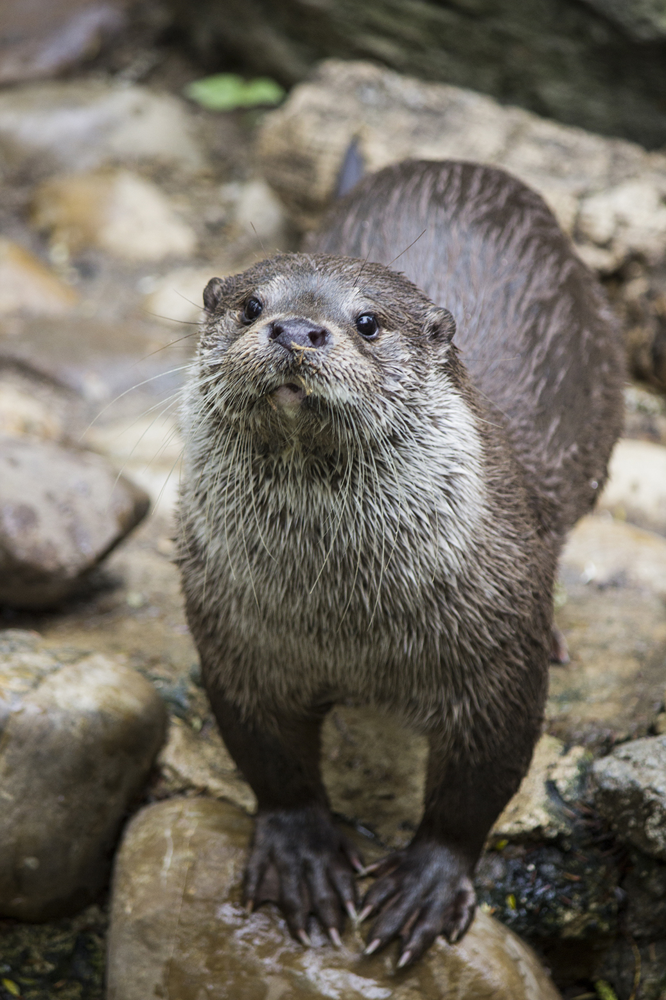
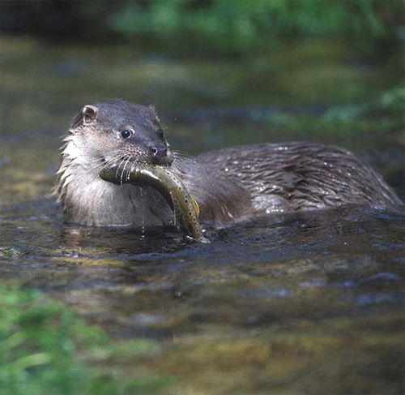
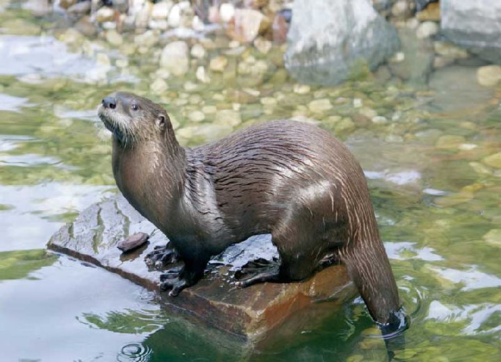
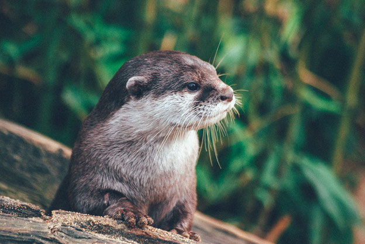

Descripción
La nutria europea o paleártica es un mamífero carnívoro de la familia de los mustélidos de hábitat acuático.
Hábitat
Su hábitat preferido está situado en las orillas de los ríos bordeadas por bosques, vegetación espesa o paredes de piedra. Le gustan las aguas cristalinas con fondos pedregosos.
Estado de conservación
Su hábitat preferido está situado en las orillas de los ríos bordeadas por bosques, vegetación espesa o paredes de piedra. Le gustan las aguas cristalinas con fondos pedregosos.
Ecología
La nutria tiene una ecología trófica y es una especie principalmente consumidora de peces que en los ambientes mediterráneos captura también importantes cantidades de cangrejos, anfibios, reptiles y, en ocasiones si no dispone de los anteriores, insectos, aves o mamíferos.
Galería de fotos



